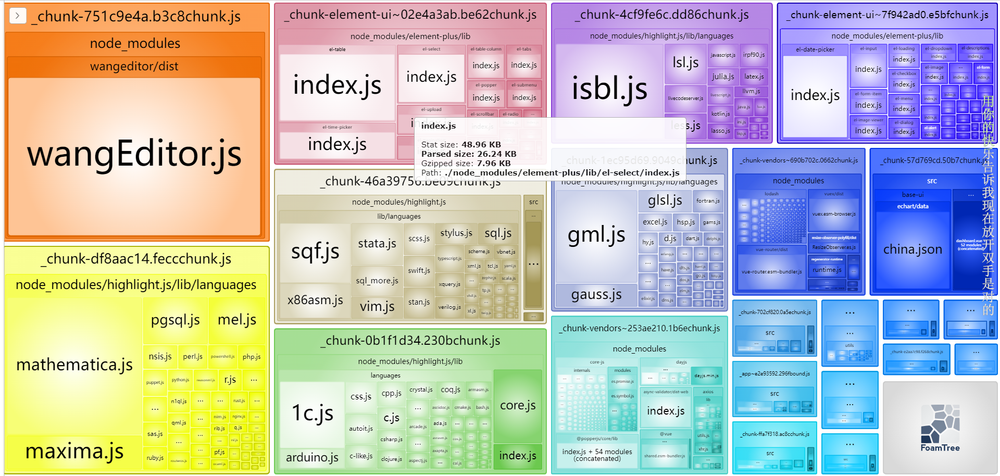

vue3-ts项目分包
vue3-ts 分包
上一篇复习了 webpack 的分包,这一篇刚好拿之前的项目实战一下
下面是分包过程中的效果
- 效果一(有的包太大):

- 效果二(有的包太小):

- 效果三(我觉得刚刚好):

vue.config.js 配置
- cdn 加载资源
- webpack-boundle-analyzer 打包依赖分析
- output hash contenthash basehash
- splitChunks 分包
- minSize maxSize
- cacheGroups(还不是很理解,带深入学习)
// const path = require('path')
const BundleAnalyzerPlugin = require('webpack-bundle-analyzer').BundleAnalyzerPlugin;
module.exports = {
// publicPath: './',
configureWebpack: {
mode: 'production',
devtool: 'none',
externals: {
vue: 'Vue',
echarts: 'echarts',
wangEditor: 'wangEditor',
highlight: 'highlight',
},
output: {
filename: '_[name].[contenthash:4]bound.js',
chunkFilename: '_[name].[contenthash:4]chunk.js',
},
optimization: {
splitChunks: {
chunks: 'all',
// 超过200kb分包
minSize: 200000,
maxSize: 200000,
cacheGroups: {
elementUI: {
name: 'chunk-element-ui',
test: /[\\/]node_modules[\\/]_?element-plus(.*)/,
chunks: 'all', //all 、async、initial
},
},
},
},
resolve: {
alias: {
views: '@/views',
},
},
plugins: [new BundleAnalyzerPlugin()],
},
devServer: {
proxy: {
'^/api': {
target: 'http://152.136.185.210:5000',
pathRewrite: {
'^/api': '',
},
changeOrigin: true,
},
},
},
};
总结
通过昨天复习的webpack, 今天进行了一波实战,但是,在配置的过程中有一些配置选项还是很模糊,比如说:cacheGroups配置,hash contenthash chunkhash 区别等,看一遍,配置一遍又忘了,还是配置的不够熟练. 这次打包优化,只是一次简单配置,更深刻的webpack内容还是没有掌握,还是需要 继续学习, 只要学, 就能学到东西, 不学, 就会一直觉得自己什么都会……
----本文结束----
 List
List